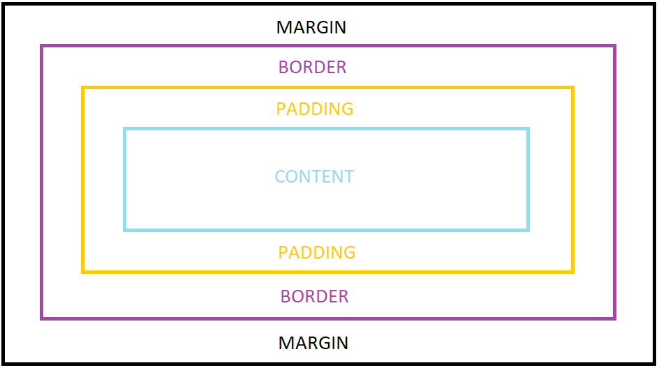
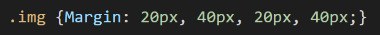

Margin, border and padding are the spaces between elements and can be manipulated with CSS. Here are the definitions.
Margin:The outermost section of the page, surrounding the border
Border:The space between the margin and the padding
Padding:The space between the border and the content
When combined these elements create the CSS Box Model.
This CSS code can be used to adjust the margin of the page:
To adjust all the margins in one go use the below code to specify the measurement of each side desired (the specified measurements are applied to the element clockwise):
The border element can be customised in a few ways:
The style function can change the shape of the border and includes none, dotted, dashed, solid and double.
E.g.
*{border-style: dotted;}
*{border-style: double;}
Similar to the margin code, the code for padding includes the ability to set each direction:
You can also join this altogether in one code (the specified sizes are applied to the element clockwise):
* {Padding: 10%, 20%, 10%, 20%;}